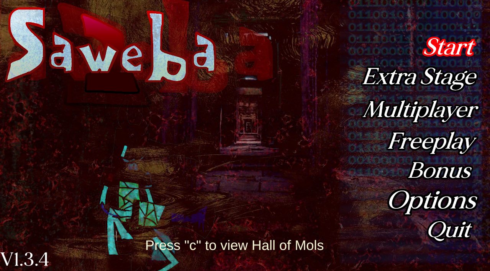

Saweba 2
Saweba 2 is... the second installment in the Saweba series (with the first coming out back in 2021-2022 on the Godot engine). Saweba (and some of its previous predecessors) play in a mostly top down 2d enviornment, where the player can move in 8 directions.
Part of my personal charm with this little series ive been making since I was in elementary school was that each installment or "sequel" were made to have a different gameplay style or have something unique that the previous game didnt. The very first game that features the 2 main characters was all about shooting (or slashing) enemies that come your way. Then all of the sudden in its sequel, you lose out on combat, then its third entry pretty much becomes all about survival.
Then, the gameplay completely switches to that of a shoot em up, to then a boss rush of sorts, to then of a platformer, to now something more similar to its roots.
Saweba 1 - The First Mission, was slightly more "story" driven (kind of... not really) while expanding the formula of the very first game (should be noted that Saweba is kind of a subseries ^^;). There was now an end goal, get from here to there instead of simply killing and trying to survive as long as possible.
And now the sequel, Saweba 2, tries again to add more improvements then its predecessor. Tweaks such as being able to shoot in 8 directions while also having an "instakill" weapon in the form of bombs. Main bosses were also tweaked to now change the gameplay to more of a bullet-hell...esque, shump like, danmanku... ranmanku, a shooter, a vertical shooter... whatever its called.
The difficulty was mostly made to mess around and troll some online friends just because... I thought it was funny. Though the game is probably easy for those who are into topdown shooters in general, I do intend for each stage to progressively increase in difficulty.
Saweba 2 takes inspiration from many things like Berzerk and Frenzy, Doom, Half-life, Mega Man, Robotron 2084, Touhou, Len'en, eXceed, Undertale, The Worlds Hardest Game (as you can probably tell from the bullet hell backgrounds), and just other arcade games (or normal games, or flash games, or any modern game in general) that I grew up with or got introduced by some friends (I also got some inspiration from irl and online friends that I referenced so when the full game comes out, try to spot for any of them).
If you were expecting normal bullet-hell, vertical shooters akin to Touhou or eXceed, or fast paced action like Ultrakill or something similar to the MM Zero series, or a story driven rpg like Undertale, or whatever games were referecend on the inspiration list... You will probably be a little disapointed... lol
Anyways thanks for trying out the game if you have already. And thank you in general for reading this haha.
Below are screenshots and other content related.
